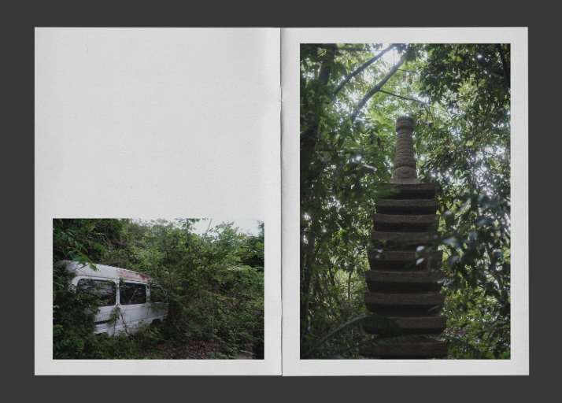

Mono no Aware
Mono No Aware (物の哀れ) is a photography zine consisting of photos captured during our trip for Concordia’s 2025 Make In Japan design field school. I aimed to capture spaces, individuals, and objects that stood out to me, in an effort to collect fragments of daily life that may other wise get overlooked in the rush of travel.
The zine is 40 pages, featuring 27 photographs. They are edited and sequenced to take the viewer along my journey through Japan’s industrial and natural sights.
Tools
Fujifilm X-T30, Adobe Lightroom, Photoshop, Indesign
